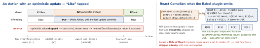

react-native · folio
In one line: React 19 (Dec 2024) makes async updates first-class: an Action is a function run
in a transition, and React tracks its pending, optimistic and error
state (useActionState, useOptimistic). 19.2 (Oct 2025) adds <Activity> and
useEffectEvent; React Compiler 1.0 (Oct 2025) memoises components and hooks
at build time. RN: React 19.0 in 0.78, 19.1 in 0.80, 19.2 in 0.83.
Download PDF Print view LaTeX source


React 19 — Actions and friends
- Action = function run in a transition (
startTransition(async () => {…})oruseTransition).isPendingstays true until the final update commits. State set after anawaitis not in the transition — wrap it instartTransitionagain. useActionState(action, initial)→[state, dispatch, isPending];action(prevState, payload)returns the next state. Dispatches are queued and run in order. Renamed from canaryuseFormState.useOptimistic(value, reducer?)→[shown, addOptimistic]. CalladdOptimisticinside an Action; when it settles React falls back tovalue— no manual rollback.use(promise | context): suspends until resolved (Suspense + Error Boundary); the one API allowed inif/loops. The promise must be stable (from a parent, cache or library) — not created in render.refis a plain prop of function components:forwardRefno longer needed, to be deprecated. Ref callbacks may return a cleanup.<Ctx value={v}>replaces<Ctx.Provider>.- Web-only (
react-dom):<form action>,useFormStatus. RN:dispatchfromonPress.
React 19.2 (RN 0.83) and 19.3
<Activity mode="visible"|"hidden">: hidden = children hidden, effects unmounted (cleanups run), updates deferred to idle, state kept. Pre-render the next tab; keep a back screen’s state without its subscriptions.useEffectEvent(fn): an “event” called from an Effect that reads the latest props/state but is not reactive — never in deps, only called from Effects of the same component. Needseslint-plugin-react-hooks@latest.- 19.2 also: Performance Tracks (Scheduler, Components) in the profiler. 19.3 (9 Sep 2026):
<ViewTransition>,addTransitionType, Fragment refs.
Example — an Action in RN (19.x)
function LikeButton({ post }) {
const [shown, addOptimistic] = useOptimistic(post.likes);
const [error, like, isPending] = useActionState(
async (_prev, id) => {
addOptimistic(n => n + 1); // instant UI
try { await api.like(id); return null; }
catch (e) { return 'Could not like'; } // UI reverts
}, null);
return (
<Pressable disabled={isPending}
onPress={() => startTransition(() => like(post.id))}>
<Text>{shown} likes {error ?? ''}</Text>
</Pressable>);
}Does the compiler end useMemo/useCallback?
For new code: mostly — write plain code. Keep them as escape hatches where identity is a contract (an effect dep that must not change). Old ones: leave, or remove with tests — removing changes the compiled output. Memo is per component: an expensive function called in 3 components still runs 3 times.
React Compiler 1.0
babel-plugin-react-compiler(first Babel plugin) lowers each component/hook to an HIR, infers each value’s inputs, emits a per-instance cache (_c(n)). Granular — even after conditional returns, which manual hooks cannot do.compilationMode:'infer'(default: PascalCase + JSX/hooks, oruse*+ hooks) ·'annotation'(only"use memo") ·'syntax'(Flow) ·'all'."use no memo"opts one function out (debugging).- Assumes the Rules of React: render is pure and idempotent, props/state/hook results immutable, hooks at top level, no
ref.currentin render. Unsure → skip that function (panicThreshold: 'none') — never a build break. - Lint:
eslint-plugin-react-hooks(v6+, flat config)recommendedcarries the compiler rules (set-state-in-render,set-state-in-effect,refs, …). Fix lint first: a flagged component is a skipped one. - React 17/18:
target+react-compiler-runtime. Verify: a sparkle “Memo” badge in React DevTools. RN: supported; Expo SDK 54+ on by default; bare RN adds the Babel plugin. Meta Quest Store: loads up to 12% faster.
Example — before / after the compiler
// BEFORE: manual, and still broken
const Row = memo(({ item, onPick }) => ...);
function List({ items, onPick }) {
const sorted = useMemo(() => sort(items), [items]);
const pick = useCallback(id => onPick(id), [onPick]);
return sorted.map(i =>
<Row key={i.id} item={i} onPick={() => pick(i.id)} />);
} // inline arrow = new prop each render: memo defeated
// AFTER: plain code; compiler caches sorted, the arrows
function List({ items, onPick }) {
const sorted = sort(items);
return sorted.map(i =>
<Row key={i.id} item={i} onPick={() => onPick(i.id)} />);
}Traps
use(fetchUser())in render: new promise each render → suspends forever.addOptimisticoutside an Action: warning, never shown.- Code that relied on memo identity (effect deps) can change behaviour — bisect with
"use no memo". Activityhidden ≠ unmounted: state stays, effects stop.